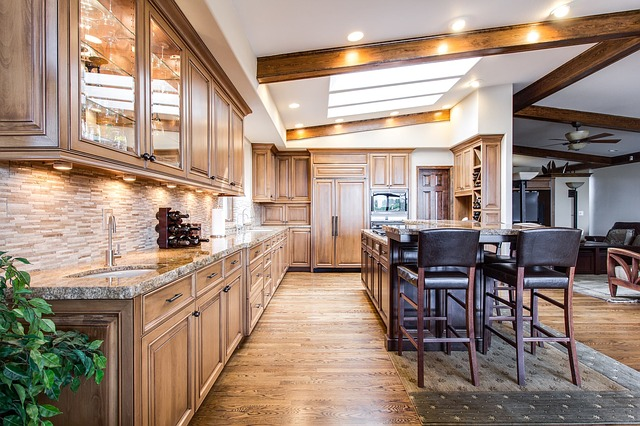
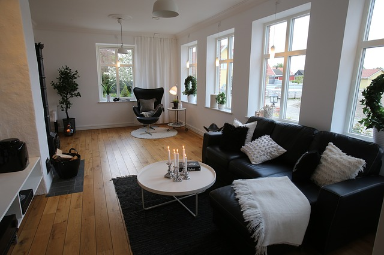

Всеки човек иска да има собствен дом, в който сам със собствени усилия да е избрал мебели, обзавеждане, цвета на стените и аксесоари. Само че опре ли ножа до кокала, и ви се наложи наистина да обзавеждате, виждате, че нещата не са толкова прости, колкото са ви изглеждали в мебелния магазин. Просто жилищата ни са строени по един стандарт, а мебелите, особено готовите са изработени по съвсем друг. И става така, че, за да напаснете дадена модулна система, която сте си харесали към определеното помещение, било то кухня, спалня, детска или дневна, трябва да станете специалист - и дизайнер, и аналитик, и маркетолог. Все пак малко са хората, които могат да си позволят да платят на специалист по интериорен дизайн, който да им обзаведе помещението с вкус и практично. Поради тази причина първото и основно правило, което трябва да спазвате, за да получите една практична и уютна стая, е да намерите достатъчно информация, която да ви казва кое и как се поставя, от какви материали трябва да е изработено и преди всичко колко пари си струва да дадете за него.
Като за начало е добре да стартирате търсенето си с ваш собствен чертеж на проекта, така както изглежда в съзнанието ви. За тази цел трябва да знаете точно колко е голямо помещението, което ще се превърне в кухня, а именно – дължина на всяка една стена, височината на тавана, размерите на издадените места и нишите. Нарисувайте в ума и на лист, как в дадения интериор ще бъдат разположени мебелите и техниката. И не бързайте към мебелния магазин, преди да сте посетили магазин за битова техника, за да решите каква ще е техниката в кухнята ви: вградена или не.
Разбира се, ако бъдещата кухня не позволява да се поставят много уреди, вероятно е добра идея да се спрете на вградени домакински уреди, така че в този случай няма какво толкова да избирате. От практична гледна точка именно уредите за вграждане са подходящи за вашата кухня. А най-хубавото е, че вече се произвеждат абсолютно всякакви кухненски уреди за вграждане: хладилници, готварски печки, фурни, съдомиални машини, микровълнови печки, аспиратори и дори пароварки и кафеварки. Друго обаче, което трябва да съобразите при тях е цената, защото вградените са по-скъпи от солото. Ако нямате възможност да платите повече, ще трябва да се превърнете в истински виртуоз на интериорния дизайн, за да съберете всичко необходимо в кухнята. Невградената техника пък притежава огромният плюс, че е подвижна и автомономна, и ако се развали пералнята например, няма да се налага да викате специално човек, който да я извади и едва тогава да я занесете на ремонт или пък да извикате човек. Ето защо, ако се спрете на вградена техника трябва да сте наясно с това, поне приблизително, колко ще ползвате дадения уред.
Първоначално идеята на хола е място за посрещане на гости. В наше време това също така е и общо помещение, където се събират всички членове на семейството. Холът основно се разделя на две зони – зона за хранене и зона за почивка. Тези участъци се разграничават с помощта на цветове, светлина и разположение на мебелите. За зоната за хранене са подходящи топли цветове – нюанси на жълтия, червения и оранжевия цвят. Уютната атмосфера, която създават тези цветове, поддържа доброто настроение при общуване. За зоната за почивка могат да се използват нюансите на синия цвят. Те понижават напрежението и умората след работен ден.
В хола също така е важно добре да се обмисли системата за осветяване. Яркото осветление – полилей, скрито осветление в корниза под тавана създават особено тържествено настроение. За разделяне на функционални зони се използва локално осветление: лампа с абажур над масата за хранене, лампион около дивана и фотьойлите. С помощта на светлината могат да се подчертаят някои детайли в интериора: картини, снимки, статуи, аквариуми и т.н. При избора на мебели за хола можем изцяло да проявим фантазията си. Стиловото решение може да е различно – от класика до минимализъм. Но нито един хол не минава без корпусна мебел. Това са всевъзможните секции, стелажи, витрини, бюфети, шкафове за книги, рафтове и т.н. За производството на тези мебели се използват различни материали. Най-скъпите са произведени от тик, светли листвени породи, бор. Популярни са и плоскостите за мебели. Друг популярен материал е МДФ, той по-здрав от плоскостите за мебели.
За производството на корпусите на меката мебел се използват същите материали, които се използват и при корпусната мебел. Най-важното изискване към меката мебел е комфорта и външния вид, които пряко зависят от дамаската. Това може да бъде плат (с различен състав), естествена или изкуствена кожа.. Често център на хола става телевизорът и видео системите. При това немаловажен детайл стават шкафовете, масите и подставките за телевизора и звуковата апаратура. Те се произвеждат от дърво, стъкло, пластмаса, метал. Аксесоарите – вази, картини и т.н. изгодно подчертават индивидуалността на интериора, но ако са прекалено много може а се развали общото впечатление. Важно е тези детайли да създават завършен вид на композицията.